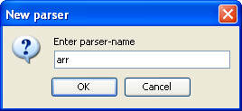

This tutorial is a quick introduction to VisualLangLab. It illustrates the tool's features by explaining how to create a simple JSON parser (based on the one on page-648 of Programming in Scala). If you don't have the book, an extract of the relevant chapter can be found here (and the JSON parser code is at the bottom of the 8th page).
Information on downloading and running VisualLangLab can be found here and at the end of this article.
Before getting into the details take a look at VisualLangLab's user interface to understand the main functions.

The user interface has five distinct parts, described below:
This section can be safely skipped -- read it only if you must.
While not the whole truth, it's harmless to believe that the tool you see in Figure-1 above is descended from scala.util.parsing.combinator.RegexParsers. It's also comforting to believe that the tree on the left (and other such trees that can be selected from the combo-box) are somehow related to RegexParsers.Parser. Beyond this, anything that you surmise about the inner workings of the tool is probably correct -- execept if those imagined machinations involve code-generation or compilation of any kind.
Since this may be unfamiliar terrain, here's a sneak preview of where we're going. The trees in Figure-2 below show the four parsers in the json parser. Comparing each tree with the corresponding Scala code (from the book or chapter extract referred above) should give you a good idea of the purpose of each node / icon.
| Parsers | |||
The list below documents the different kinds of parser-tree nodes:
Each node in the parser tree has a name that is shown to its right. The Regex (), Literal (), and Reference () nodes have real names based on information assigned when these nodes are created. The remaining icons have a machine-made name (in parenthesis) based on the parser's name and the icon's position in the parser tree. All nodes must have a name to enable tracing, error reporting, etc.
Every node name is preceded by a separate 1-character decoration that depicts its multiplicity. Table-1 below lists the characters used and their meaning. Each node is created with a default multiplicity of 1, but this value can be changed via the element's context menu. A RepSep element's multiplicity may only be * (default) or +. VisualLangLab does not have a separate node type for Scala's rep1sep, but this distinction is made by setting multiplicity to +.
| Table-1 Multiplicity indicator | |
| Decoration | Multiplicity |
| 1 | Exactly one |
| ? | Zero or one |
| * | Zero or more |
| + | One or more |
| 0 | Must not exist |
Each node name may also be followed by a separate 3-character decoration as described in Table-2 below. We do not use these features in this example.
| Table-2 Trace & error-message indicator | |
| Decoration | Meaning |
| None | No trace, and no custom error message |
| [M] | Element has custom error-message |
| [T] | Element has tracing on |
| [#] | Tracing enabled, and custom error-message set |
Remember that these trees are not parse trees (parser output), but a representation of the structure of a parser's code. When you create a parser with VisualLangLab, you don't see any Scala code -- just use the tools provided to create a few trees like the ones in Figure-2, and you're done! These trees are therefore called parser trees.
When VisualLangLab is started, it creates and displays a parser called NoName with just a root node (see Figure-3 below). NoName is just a place-holder (so the tree display area has something to show), and the user will typically ignore it and proceed to create the parsers he/she needs.
So let's start!
First create the four parsers (arr, member, obj, and value) by following these steps:
|  |
Perform this process for each of the four parsers (arr, member, obj, and value). When finished, the combo-box (just above the tree area) should have entries for all these newly created parsers.
Let's now create the 3 Literal tokens needed to complete the arr parser:
Perform this process for each of the three literals ([, ], and ,). To make it easy to refer to these literals, we give them mnemonic names (LBKT, RBKT, and COMMA). The table below contains the text that must be entered into the New literal dialog to create these Literals.
| Token | Text for New literal |
| Left bracket | LBKT, [ |
| Right bracket | RBKT, ] |
| Comma | COMMA, , |
We now have everything needed to finish off arr. Proceed as follows:
|
As in the diagram above, you should now have a Sequence node attached to the root node. The node's name is rendered in red to indicate that it is incomplete (a Sequence should have 2 or more child nodes). Now let's add the required child nodes.
Right-click the Sequence node and choose Add -> Token from the context menu (left of Figure-7 below). This presents the Add token dialog (right of Figure-7 below). Select LBKT from the drop-down list, and click OK. This should add the Literal LBKT to the Sequence node.
Next, add a RepSep to the Sequence Node by right-clicking it and choosing Add -> RepSep from the context menu. A RepSep node should get added to the Sequence node just below the LBKT Literal. Now let's add the RepSep's child nodes.
The RepSep houses an indefinite number of repetitions of a reference to the parser value separated by a comma. We add the first child by right clicking the RepSep and choosing Add -> Reference from the context menu. This presents the Add reference dialog (right of figure below). Select value from the drop-down list, and click OK (left of Figure-8 below). This should add the Reference value to the RepSep node. Right-click the RepSep node again, and choose Add -> Token. This time choose COMMA from the drop-down list and press OK. The RepSep's name, which was earlier rendered in red, should now turn black (as addition of the second child node completes the RepSep node)
 |
Finally, right-click the Sequence node and choose Add -> Token again. This time choose RBKT from the drop-down list and press OK. This completes the parser arr. Verify that it looks like the one in Figure-2 above. You should also be able to see the literal pattern (as a tool-tip text) when the mouse hovers over the Literal node icons.
Let's now turn our attention to member. However, before we can make any progress, we need to define a couple of new tokens. From the main menu, choose Tokens -> New regex, copy-paste the following text into the New regex dialog box, and click OK:
stringLiteral, "([^"\p{Cntrl}\\]|\\[\\/bfnrt]|\\u[a-fA-F0-9]{4})*"
Then create a Literal for :. From the main menu, choose Tokens -> New literal, copy-paste the following text into the New literal dialog box, and click OK:
COLON, :
Now select member in the parser-chooser combo-box. Add a Sequence node to member's root node. Then add the following three child elements to the Sequence node.
This completes the parser member. Verify that it looks like the one in Figure-2 above. You should also be able to see the literal and regex patterns (as tool-tip text) when the mouse hovers over the Literal or Regex node icons.
If you've understood how we created the two previous parsers, you won't need any help with the remaining two. But just to speed your way through those parsers, here some help with a few mundane details. The table below lists information for some tokens that need to be created first. CAREFUL: The last one is a Regex, the others are Literals
| Token | Text for New literal |
| Literal left curly bracket | LCURLY, { |
| Literal right curly bracket | RCURLY, } |
| Literal null | NULL, null |
| Literal true | TRUE, true |
| Literal false | FALSE, false |
| Regex floatingPointNumber | floatingPointNumber, -?(\d+(\.\d*)?|\d*\.\d+)([eE][+-]?\d+)?[fFdD]? |
To test your parser proceed as follows.
If you just can't get the parser to behave, choose Help -> Samples -> Simple JSON from the main menu. A canned version of this parser is loaded into the tool. Remember to always have the top-level parser value selected when trying to run the parser.
If your parser works as expected, and you'd like to understand the structure of the parse-tree better, select Run -> Tree handler -> Pretty and run again. You can also write a Scala class to handle the parse tree. To see an example parse-tree handler see the sample called ArithExpr
If the parser appears to have errors you can use the Trace and Error message features (on the context menu) to track down the bug.
Download VisualLangLab.jar,
then execute: scala -cp VisualLangLab.jar net.java.dev.vll.VisualLangLabYou must have Scala 2.8.0 installed, which in turn requires Java 1.5 or higher. |